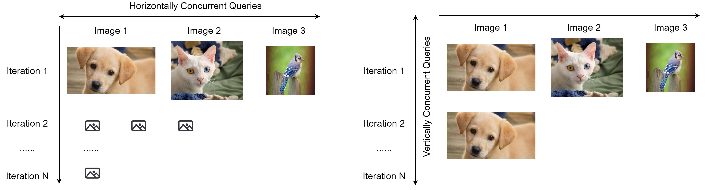

Distributed Black-box Attack against Image Classification Cloud Services
Han Wu, Sareh Rowlands, and Johan Wahlstrom

Deep Learning Models are vulnerable to Adversarial Attacks

White-box Attacks: fast and efficient.

Black-box Attacks: slow and rely on queries.
- Increasing the attack succes rate.
- Reducing the number of queries.
- Reducing the total attack time.
How to accelerate black-box attacks?

Common Mistakes

Most prior research used local models to test black-box attacks.

We initiate the black-box attacks directly against cloud services.
Horizontal Distribution


Horizontal distribution reduces the total attack time by a factor of five.
Vertical Distribution


Vertical distribution achieves succeesful attacks much earlier.
Thanks